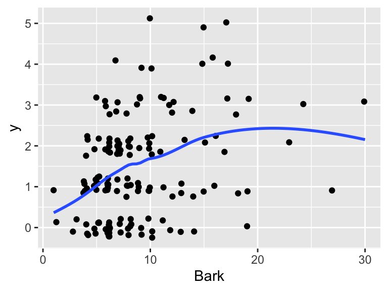
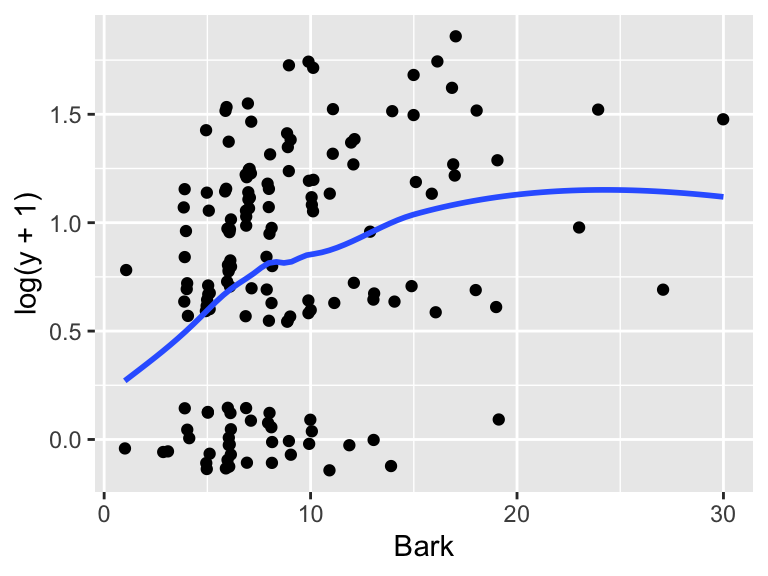
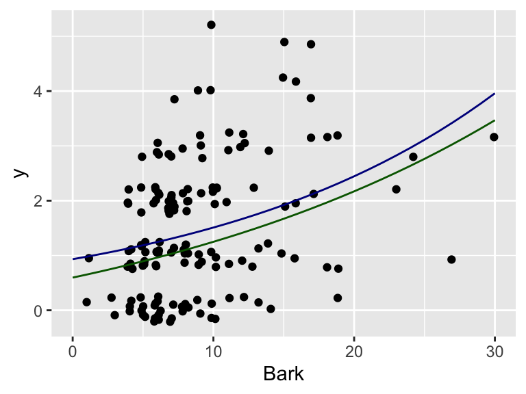

possums <- read.csv('https://www.math.carleton.edu/ckelling/data/possums.csv', header = TRUE)26: Intro to Poisson Regression
Data Overview
These data come from a study of 151 separate 3 hectare sites in Victoria, Australia. The purpose of the study was to learn what makes a good habitat for possums, in order to identify areas of forest for habitat preservation. The variables are:
y, the number of possum species found on the siteAcacia, basal area of acacia (a shrub), in \(m^2\)Bark, a bark quality index (bigger is better)Habitat, a habitat score for Leadbeater’s possums (bigger is better)Shrubs, the number of shrubsStags, the number of hollow treesStumps, indicator for whether or not stumps from logging are presentAsp, the primary aspect of the plot (SW-NW, NW-NE, etc.)Dom, the dominant eucalypt species (one of three species)
For today, we will focus on the number of possum species (y) and the bark quality index (Bark).
Load the dataset:
EDA
1. Make a plot of y vs. Bark and argue that there is a need for a transformation of at least one of the response and/or predictor.
Note
I recommend that you jitter the value of y so that you can more easily see the density of points. Replace gf_point with gf_jitter. You can vary the amount of horizontal “jitter” with width = .25 and the amount of vertical jitter with height = .25 (and replace .25 with whatever number you want!)
TipSolution
It looks like there’s a nonlinear relationship between the number of species and the bark index, with the number of species on average increasing with bark index more rapidly for small bark indices and then potentially leveling off. There also appears to be some heteroskedasticity, with larger variability for larger bark indices.
gf_jitter(y ~ Bark, data = possums, width = .25, height = .25) |>
gf_smooth(se = FALSE)`geom_smooth()` using method = 'loess'
2. The variable y can take the value 0, so we cannot take its logarithm. One possibility for transformation is to add 1 to the value before taking the logarithm. Plot log(y+1) vs. Bark and fit the corresponding log-normal linear model. Interpret the estimated slope coefficient.
TipSolution
The relationship looks more linear. The estimated slope coefficient is 0.034. This means that a one-unit increase in the bark index is associated with a 3.5% increase in the predicted number of species (since \(e^{0.034} = 1.035\)).
Note that we’ve just shifted the whole distribution up by 1, so this is not going to change our interpretation.
gf_jitter(log(y+1) ~ Bark, data = possums, width = .15, height = .15) |>
gf_smooth(se = FALSE)`geom_smooth()` using method = 'loess'
possum_lognormal <- lm(log(y+1) ~ Bark, data = possums)3. Now estimate the Poisson regression model, using y as the response variable and Bark as the predictor (and the log link function). Interpret the estimated slope coefficient.
TipSolution
The slope coefficient estimate is 0.048. This means that a one-unit increase in the bark index is associated with a 4.9% increase in the mean number of species (since \(e^{0.048} = 1.049\)).
possum_glm <- glm(y ~ Bark, data = possums,
family = poisson())
summary(possum_glm)
Call:
glm(formula = y ~ Bark, family = poisson(), data = possums)
Coefficients:
Estimate Std. Error z value Pr(>|z|)
(Intercept) -0.07006 0.13615 -0.515 0.607
Bark 0.04820 0.01156 4.170 3.04e-05 ***
---
Signif. codes: 0 '***' 0.001 '**' 0.01 '*' 0.05 '.' 0.1 ' ' 1
(Dispersion parameter for poisson family taken to be 1)
Null deviance: 187.49 on 150 degrees of freedom
Residual deviance: 172.14 on 149 degrees of freedom
AIC: 456.94
Number of Fisher Scoring iterations: 54. Let’s visualize how well our two models capture the data on its original count scale. Fill in the missing pieces of the predict() functions in the starter code below to generate predictions across a range of bark indices from 0 to 30, then complete the plot.
Compare and contrast the two fitted curves. Explain why the Poisson model predictions are bigger than the Gaussian model predictions. (Hint: the Poisson model gives estimates of the mean on the original scale.)
Note
Here is some starter code that first makes a preds dataset showing the predicted values under the two models for all Bark values between 0 and 30. Then, it creates a jittered scatterplot of the original data, and overlays the two fits.
- For the Log-Normal OLS model (
possum_lognormal): Remember that this model predicts \(\log(y+1)\). To map these predictions back to the original count scale (\(y\)), you will need to mathematically undo both operations. - For the Poisson GLM model (
possum_glm): By default,predict()returns values on the log-link scale (\(\eta\)). Look at the help documentation (?predict.glm) to find the specific character string needed for the type argument to return predictions on the original response scale (\(\mu\)). - Fill in both blanks in the code with a version of
predict(model, newdata = data.frame(Bark = Bark)). I’ve given you most of thepossum_glmcode.
preds <- tibble(
Bark = 0:30,
y_ols = _______,
y_glm = predict(possum_glm, newdata = data.frame(Bark = Bark), type = "____")
)
gf_jitter(y ~ Bark, data = possums, width = .25, height = .25) |>
gf_line(y_ols ~ Bark, data = preds, col = "darkgreen") |>
gf_line(y_glm ~ Bark, data = preds, col = "darkblue")
TipSolution
The two fitted curves are similar in shape, but the Gaussian model’s predictions are consistently smaller than the Poisson model’s. This is because the response variable is skewed right, so the median will be smaller than the mean. The Gaussian model gives estimates of the median (on the original scale), whereas the Poisson model gives estimates of the mean.
preds <- tibble(
Bark = 0:30,
y_ols = exp(predict(possum_lognormal, newdata = list(Bark = Bark))) - 1,
y_glm = predict(possum_glm, newdata = list(Bark = Bark), type = "response")
)
gf_jitter(y ~ Bark, data = possums, width = .25, height = .25) |>
gf_line(y_ols ~ Bark, data = preds, col = "darkgreen") |>
gf_line(y_glm ~ Bark, data = preds, col = "darkblue") 
5. Calculate a 95% Wald-based confidence interval for the slope coefficient (\(\beta_1\)) of Bark using the Poisson model. Do this (1) by hand using the formula and (2) with R using confint or tidy
TipSolution
The formula for a 95% Wald confidence interval is: \[\hat{\beta}_1 \pm z^* \times SE(\hat{\beta}_1)\]
From the summary table, we take the estimate (0.048) and its corresponding standard error. Using \(z^* = 1.96\):
\[\text{CI} = 0.048 \pm 1.96 \times SE(\hat{\beta}_1)\]
To calculate this directly in R without doing manual arithmetic, we can use the confint.default() function to get Wald intervals, or use broom::tidy():
# Option 1: Base R Wald intervals
confint(possum_glm, parm = "Bark", level = 0.95)Waiting for profiling to be done... 2.5 % 97.5 %
0.02483799 0.07019319 # Option 2: Clean tidy tibble
broom::tidy(possum_glm, conf.int = TRUE, exponentiate = FALSE) |>
filter(term == "Bark")# A tibble: 1 × 7
term estimate std.error statistic p.value conf.low conf.high
<chr> <dbl> <dbl> <dbl> <dbl> <dbl> <dbl>
1 Bark 0.0482 0.0116 4.17 0.0000304 0.0248 0.07026. Suppose a newly surveyed forest site has a bark quality index of Bark = 15. Use your Poisson regression model to calculate the predicted mean number of possum species (\(\hat{\mu}\)) for this site. Be careful with your scales!
TipSolution
We plug the predictor value into our estimated linear predictor equation and then apply the inverse-link (exponentiation) function to bring it back to the original count scale:\[\log(\hat{\mu}) = \hat{\beta}_0 + \hat{\beta}_1(15)\]\[\hat{\mu} = e^{\hat{\beta}_0 + \hat{\beta}_1(15)}\]
predict(possum_glm, newdata = data.frame(Bark = 15), type = "response") 1
1.921297